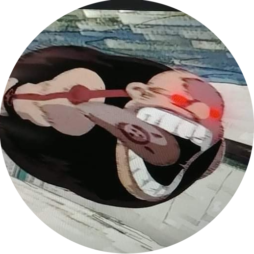

|  | Kezdőlap | Iskola | Órarend | Tükör |  |
 |
|---|
| Óra | Hétfő | Kedd | Szerda | Csütörtök | Péntek |
| 1. 07:25-08:10 |
vizuális kultúra Paragi Éva G - 113 |
matematika Vargáné dr. Nádházi Ágnes G - 111 |
magyar nyelv Horváth Krisztina G - 111 |
földrajz László Györgyi G - 006 földrajz előadó |
kémia Tóth Károlyné G - kémia előadó |
| 2. 08:20-09:05 |
digitális kultúra Rozgonyi-Borus Ferenc G - Informatika 19 |
irodalom Horváth Krisztina G - 402 |
irodalom Horváth Krisztina G - 111 |
testnevelés és sport Széll Ágnes nagy tornaterem |
német nyelv Füleki Tamás G - 105 |
| 3. 09:20-10:05 |
fizika Kopasz Katalin (Dr.) G - 307 |
német nyelv Füleki Tamás G - 101 |
matematika Vargáné dr. Nádházi Ágnes G - 211 |
angol nyelv Illés Bence G - 105 |
matematika Vargáné dr. Nádházi Ágnes G - 211 |
| 4. 10:20-11:05 |
kémia Tóth Károlyné G - kémia előadó |
biológia Szalai Anikó G - 114 biológia előadó |
fizika Kopasz Katalin (Dr.) G - 301 |
biológia Szalai Anikó G - 214 |
angol nyelv Illés Bence G - 204 |
| 5. 11:15-12:00 |
digitális kultúra Németh Tamás (Dr.) G - Informatika 19 |
testnevelés és sport Széll Ágnes nagy tornaterem |
digitális kultúra Németh Tamás (Dr.) G - Informatika 19 |
matematika Vargáné dr. Nádházi Ágnes G - 004 |
digitális kultúra Rozgonyi-Borus Ferenc G - Informatika 19 |
| 6. 12:20-13:05 |
irodalom Horváth Krisztina G - 405 |
történelem Mészáros Tibor G - 218 |
történelem Mészáros Tibor G - 214 |
német nyelv Füleki Tamás G - 103 |
fizika Kopasz Katalin (Dr.) G - 301 |
| 7. 13:15-14:00 |
angol nyelv Illés Bence G - 204 |
osztályfőnöki Mészáros Tibor G - 214 |
ének-zene Fehér Márta G - 113 |